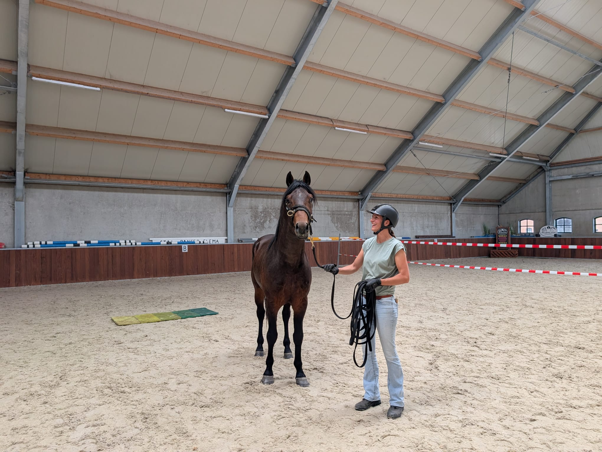

Bron: Stal PanserGrondwerk
Een sterke connectie met je paard begint bij het onderlinge begrip vanaf de grond.
Met grondwerk versterk je jullie communicatie en bouw je aan aandacht, balans en wederzijds vertrouwen. Door bewust te kijken, te voelen en te reageren, ontwikkel je steeds meer inzicht in het gedrag en de beweging van je paard. Je leert hierbij bewust omgaan met je eigen lichaamstaal, positie en de manier waarop je communiceert.
Wie beweegt wie? Dit interessante uitgangspunt laat zien hoe jullie samenwerking op dit moment verloopt. Je leert op een rustige en duidelijke manier leiderschap te nemen, waarbij veiligheid altijd vooropstaat. Het mooiste gevoel is wanneer je merkt dat je paard écht op je gaat letten, ontspanning vindt en in vertrouwen met je meebeweegt. En het meest bijzondere? Terwijl jij je paard leert lezen, houdt hij jou een spiegel voor en leer je ontzettend veel over jezelf.
Bespreek jullie situatie